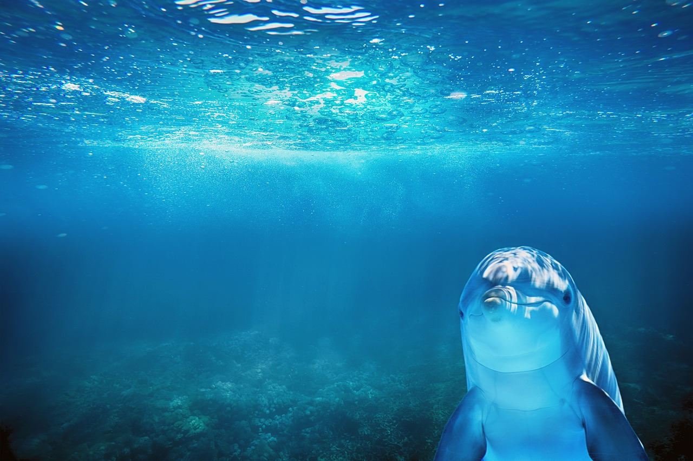
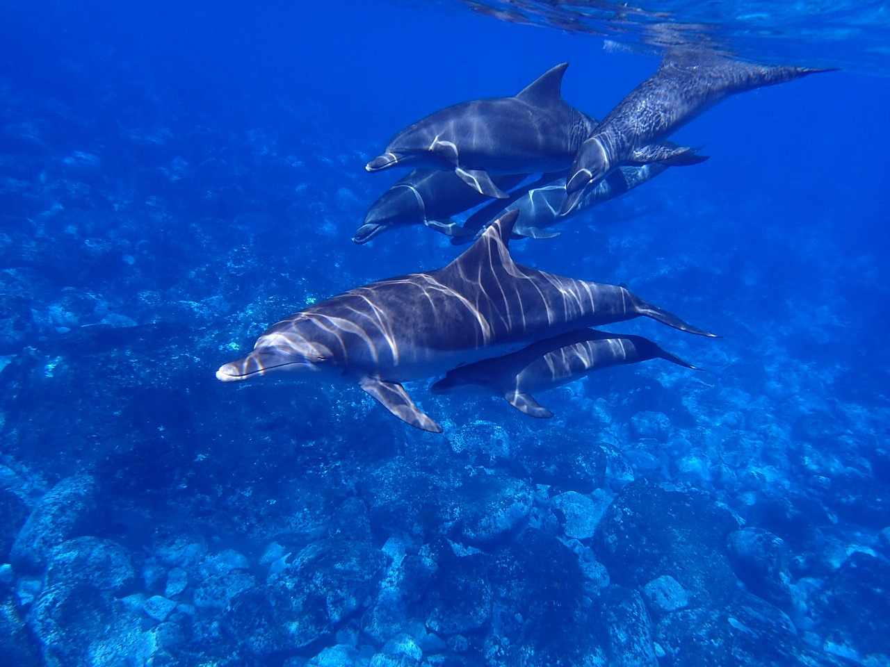
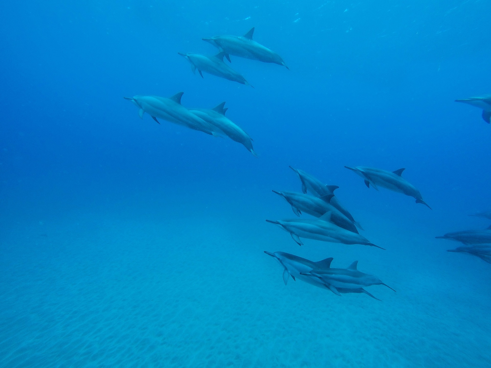

Výlet za delfíny v Pule
Večerní plavba kolem Brionských ostrovů ve zlatém světle s možností spatřit delfíny.
- Čas
- 18:00–21:00
- Cena
- 50 € za dospělého
- Koupání
- Bez zastávky, bez vstupného do parku
- Děti
- Do 3 let zdarma
Proč večer
Delfíni žijí ve vodách kolem Brionských ostrovů a k večeru bývají často aktivnější, proto je tento výlet načasován na západ slunce. Vyplouváme z Rivy, obeplujeme ostrovy a bedlivě sledujeme hladinu, zatímco vy si vychutnáváte jídlo, drink a hudbu.
Delfíni se objevují často, ale zaručit je nemůžeme. Pokud se neukážou, zůstane vám klidné moře a nejkrásnější světlo dne.
I bez delfínů stojí světlo nad ostrovy za cestu.

Podrobnosti výletu
- Čas: 18:00–21:00
- Cena: 50 € za dospělého, děti do 3 let zdarma
- Jedno jídlo: ryba, hamburger nebo vegetariánské jídlo
- Neomezené víno, džusy a minerální voda
- Bez zastávky ke koupání a bez vstupného do parku
- Domácí mazlíčci vítáni na palubě
- Odjezd z Rivy, vedle mariny ACI
Pro koho je vhodný
Pro páry, rodiny, přátele a všechny, kdo dávají přednost klidnému večeru na vodě. Pokud se chcete také vykoupat, přidejte si během pobytu denní plavbu. Mnoho hostů absolvuje obě.
- Plavba při západu slunce: 18:00–21:00
- Jedno jídlo a neomezené nápoje
- Děti do 3 let: zdarma
- Domácí mazlíčci vítáni na palubě
Jak si večer užít naplno
Sledujte obzor a brázdu za lodí
Delfíni se často objevují u zádi nebo před přídí. Mějte fotoaparát připravený.
Vezměte si něco teplého
Na vodě se rychle ochladí, jakmile slunce klesne nízko.
Chraňte telefon před vlhkostí
Malé vodotěsné pouzdro se hodí, pokud bude stříkat voda.
Přijďte s časovou rezervou
Dorazte o 30 minut dříve a vyberte si dobré místo.
Fotografie



Často kladené otázky
Kde na lodi je nejlepší místo k vyhlížení delfínů?
Vyplatí se večerní plavba, i když se delfíni neukážou?
Jak chladno bývá na vodě po západu slunce?
Dají se telefonem pořídit dobré fotky delfínů?
Co se děje po návratu ve 21:00?
Chcete si rezervovat místo?
Pošlete nám termín a počet osob. Ověříme volnou kapacitu a odpovíme do 24 hodin.